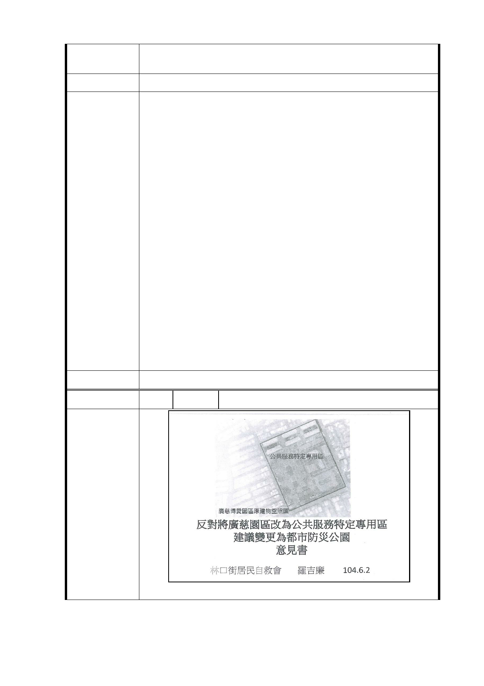

五、 林局長一直強調樹保委員要留下來的樹，不過委員不
代表大會結論，老樹一定要經過正當程序才算是老樹!
建 議 辦 法 全區保留作生態及防災公園。
一、 考量本區受保護樹木、樹群眾多且散布計畫區，未來
建築量體配置將落實以屋就樹理念，採全區整體規劃
設計方式，配合現有老樹分布位置集中留設公共開放
空間，並以地面層挑空方式開發，結合通用設計理念，
提供更適切完善之穿透性公共開放空間。
二、 基地內受保護樹木、樹群及喬木等，除捷運設施必要
移植外，應以原地保留為原則。倘配合建築物規劃使
用效益須移植，應以基地內移植為原則。經查區內樹
市府回覆
意見
木共計 7 百餘棵，其中受保護樹木為 59 棵(14 棵已列
管、45 棵已達規模尚未列管)，配合捷運尚需移植 2
棵老樹；區內樹群以原地保留為原則，初步規劃影響
喬木共 63 株，應於基地內移植為原則。
三、 廣慈博愛園區現址係以提高整體公共利益為規劃考
量，提供社會福利設施、公共住宅、警政、辦公、鄰
里商業及公共交通轉乘服務等之複合式公共服務，並
由本府都市發展局主政規劃設計，並整體配置相關單
位使用需求空間。
四、 本府公有地之開發案，皆係以提高整體公共利益為原
則。
委 員 會 決 議 同編號 1
編 號 6 陳情人 羅○廉
陳情理由
- 11 -